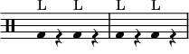

Explanation
The notes below correspond (from lowest to highest) to:

-
Bass: the lowest thumping sound you get from the center of the face cajon
-
Snare: the sharp, crisp sound you get from slapping the part of the face of the cajon with the snares
-
Hihat: the sharp, high sound you get from slapping the edge of the cajon
-
Ride: either an actual cymbal or a stylized version of the hihat (a flam on the edge, for example)
Unless otherwise mentioned, all times are in 4/4.
Bass-Only Rhythms
The "L" and "R" correspond to the hand you play the note below it with (left or right).


- 